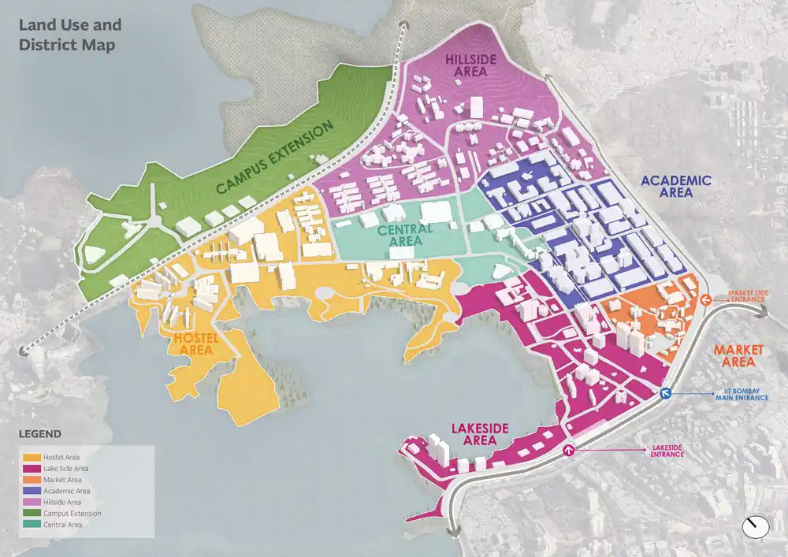
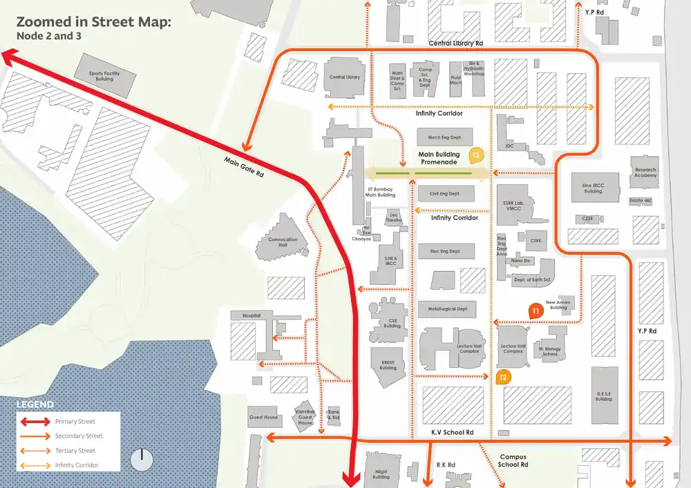
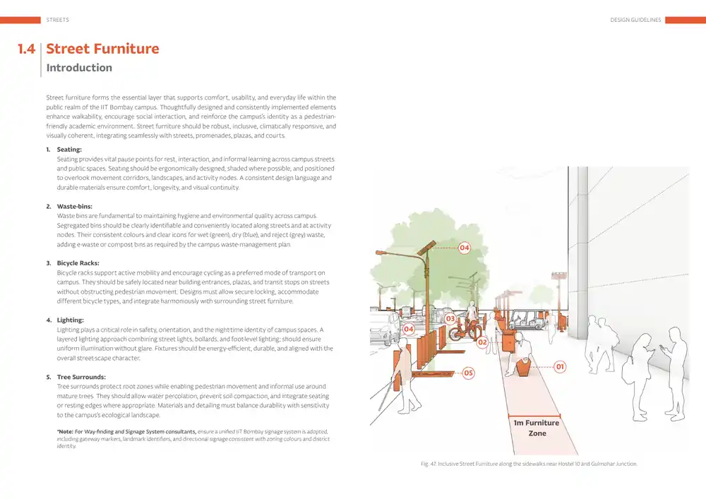
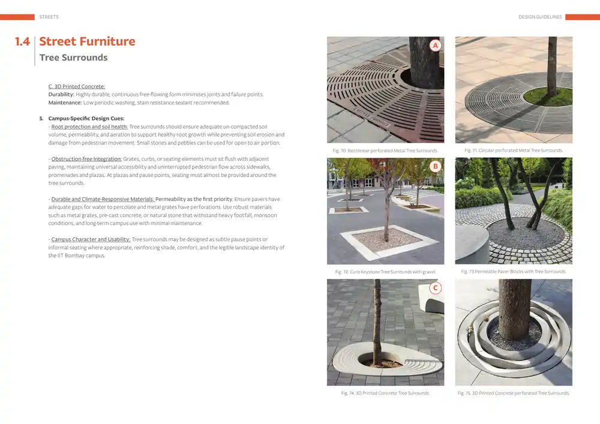
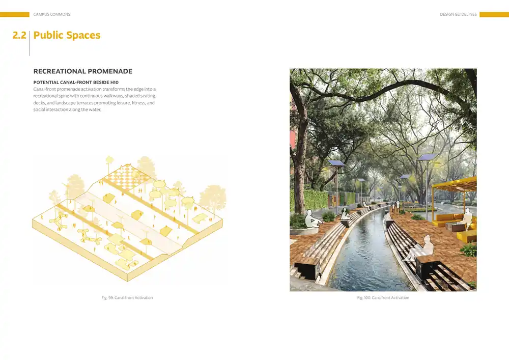

A campus grows one building at a time. These guidelines make sure it still reads as one place: clear, coherent and cared for, with every new street, space and building adding to a shared identity.

The book reads the campus as it stands, its districts, open spaces, streets and landmarks, and turns what it finds into principles for how it should grow. It sets intent and character rather than fixed standards, so each project can adapt it to its own site, use and terrain.
The aim is a campus that keeps its sense of place as it expands: built form, landscape and people held together, and growth that is sustainable, accessible and inclusive.





Indian Institute of Technology Bombay
Sameep Padora and Associates
In progress · 2026